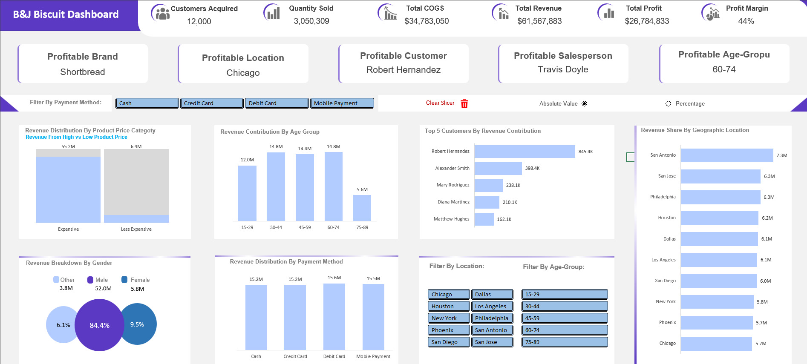
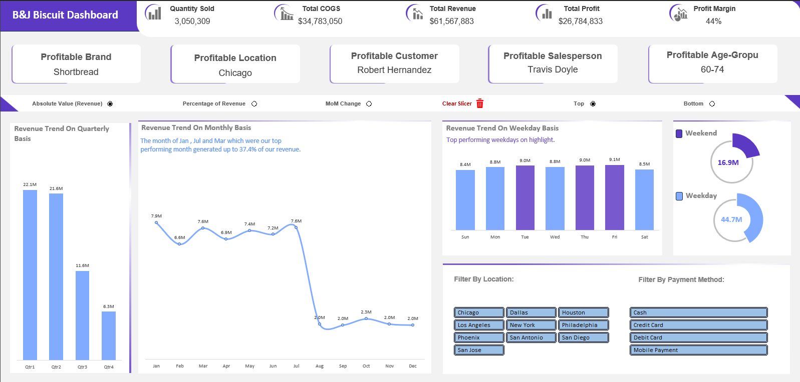

B&J Biscuit Business Analysis Dashboard
Transforming complex revenue distribution and profitability challenges into an intuitive, visual command center. This dynamic Excel dashboard empowers the B&J team to drive smarter, data-backed decisions.
Advanced Excel Dashboard
Built using advanced Pivot Tables, Pivot Charts, and interactive Slicers to provide real-time, on-demand business intelligence without the need for external BI tools.
The Challenge
In today's competitive FMCG landscape, raw data alone is insufficient. B&J Biscuit needed clear, immediate insights to drive smarter decisions. The challenge was to transform their complex, multi-dimensional sales data into an intuitive format that illuminates key trends and opportunities at a glance.
My Approach
- Designed a dynamic sales dashboard using advanced Pivot Tables and Charts.
- Implemented interactive Slicers (Location, Payment Method, Age Group) for on-demand data slicing.
- Engineered dynamic calculations to toggle between absolute values and percentages for deeper context.
- Systematically analyzed profit margins, sales trends, and consumer demographics.
How This Dashboard Empowers the B&J Team
Deep-Dive Revenue Intelligence
Instantly visualize revenue distribution across product price categories, customer age/gender, payment methods, and geographic locations for targeted marketing.
Profitability Spotlight
Identify top-performing brands, locations, customers, and salespersons at a glance, alongside the crucial overall profit margin for smarter resource allocation.
Customer Understanding
Go beyond top spenders to analyze demographic impact, ensuring sales and marketing strategies resonate with the right audience segments.
Dynamic Trend Tracking
Spot revenue shifts instantly with Quarter-over-Quarter (QoQ), Month-over-Month (MoM), and Week-over-Week (WoW) change analysis.
Interactive Exploration
Intuitive filters let users slice data their way. Toggle between absolute values and percentages for deeper context, answering specific business questions on demand.
Dashboard Screenshots

